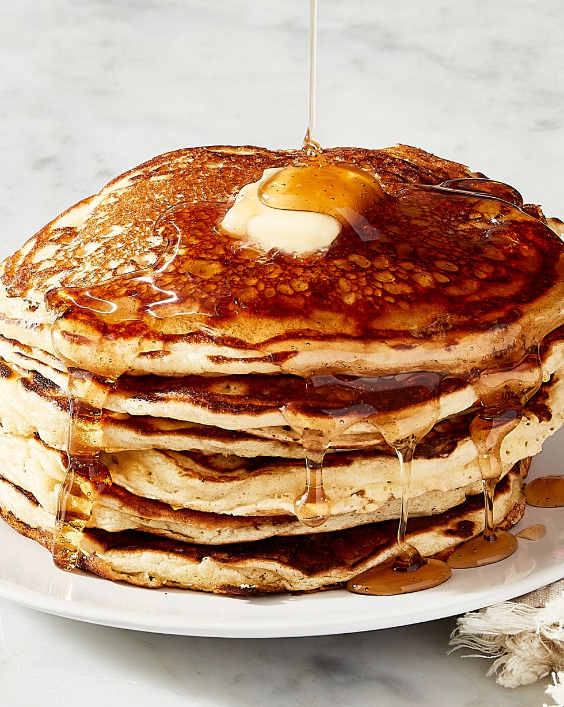

Pancakes recipe
Pancakes

Yummy stack of pancakes
Pancakes are by far my favorite breakfast dish. They can be eaten alone or as a side dish with other breakfast foods like eggs and hash browns. They are easy to prepare and delicious to eat.
Ingredients
- 2 cups all-purpose flour
- 2 1/2 tbsp.granulated sugar
- 1 tsp.baking powder
- 1 tsp.baking osda
- 1 tsp.kosher salt
- 2 1/2 c.buttermilk
- 2eggs, separated
- 4 tbsp.unsalted butter, melted, plus more for serving
- Vegetable oil, for cooking
- Maple syrup, for serving
Steps
- In a medium bowl whisk together flour, sugar, baking powder, baking soda and salt. In another medium bowl, whisk together buttermilk and egg yolks. As you whisk, stream in the melted butter.
- In another bowl, using an electric mixer fitted with the whisk attachment, beat egg whites on high until stiff peaks form, 1 to 2 minutes. Fold the egg whites into the wet ingredients until just combined. Finally, spoon the wet ingredients over the dry and gently fold together until just combined (do not overmix). Some lumps are OK.
- Preheat a griddle or other heavy bottomed skillet over medium heat until hot but not scorching, 2 to 3 minutes. Add about a teaspoon of oil then use a cloth or paper towel to rub it onto the cooking surface until you see no visible oil.
- Using a measuring cup, ladle as many heaping ⅓ cups of batter onto the griddle as you can fit, then use the bottom of the measuring cup to gently spread the batter to even circles. Cook pancakes until you see bubbles form on the top and the sides start to lift from the pan, 2 to 3 minutes. Flip the pancakes and cook until the bottom is golden and the cake is fluffy, another 2 to 3 minutes. Transfer to a rack. Continue with the rest of the batter, wiping out the pan and adding more oil between batches.
- Serve the pancakes warm with butter and syrup.